{kind=link}
Overview
Qhronology is a Python package for computing the states of the chronology-respecting (CR) and chronology-violating (CV) quantum systems according to the foremost quantum theories of time travel. It also functions as a (mostly) complete quantum circuit simulator, and contains an engine for the basic visualization of quantum circuit diagrams. Its main features include:
temporal paradox resolution using quantum-mechanical prescriptions of time travel
Deutsch’s model (D-CTCs)
postselected teleportation (P-CTCs)
general quantum computation and information processing
algebraic, symbolic calculations
(classical) simulation of quantum experiments (limited by the finite precision of floating-point arithmetic)
quantum circuit visualization
text-based semigraphical diagrams constructed using glyphs from monospace fonts (support for both ASCII and Unicode)
The primary purpose of Qhronology is to facilitate the study of quantum theories of time travel in both educational and research capacities. In addition to this, the package also functions as a quantum circuit simulator, allowing for comprehensive analysis of the general quantum operations of quantum information processing and computation. Qhronology’s underlying mathematical system accomplishes this using the standard \(\Dimension\)-dimensional matrix mechanics of discrete-variable quantum theory in a general \(\Complexes^\Dimension\)-representation.
The package provides a sufficiently complete and self-contained set of tools with the intention that performing transformations on quantum constructs and data with external packages and libraries need not be necessary (in most cases). Qhronology aims to make the expression of quantum states, gates, circuits, and time-travel prescriptions near-limitlessly possible with a framework that is syntactically simple, informationally dense, programmatically intuitive, mathematically powerful, extremely flexible, and easily extensible.
In addition to functionality provided by Python’s standard library, Qhronology is built around features from both the canonical SymPy (repository) and NumPy (repository) projects. In particular, the package greatly leverages the symbolic and linear algebra capabilities of the former, and so aims to have a deep compatibility with SymPy and its matrix objects. It is hoped that users possessing experience with these projects should therefore find Qhronology’s interface both familiar and intuitive.
Note
Qhronology in its current form is considered to be highly experimental. Its output may be incorrect, and some features may not work as intended. Additionally, please note that its functionality, including any and all functions, classes, methods, and modules, may be subject to change in future versions.
Features#
Quantum computing simulations#
Designed to provide a powerful set of features with a simple and intuitive syntax, Qhronology facilitates the simulation of quantum computation, information processing, and algebraic calculations.

{kind=link}
Quantum resolutions to antichronological time-travel paradoxes#
The fundamental indeterminism of quantum mechanics can be leveraged to provide resolutions to quantum formulations of classic time-travel paradoxes (such as the infamous grandfather paradox). A select few prescriptions by which this may be achieved, including Deutsch’s model (D-CTCs) and the postselected teleportation prescription (P-CTCs), are implemented both as bare functions and class methods.

{kind=link}
Quantum circuit visualization#
Quantum circuit diagrams provide a powerful picturalism through which any quantum process can be visualized as a network of quantum logic gates connected by wires. Qhronology provides this functionality for any quantum process constructed using its built-in classes.

{kind=link}
Numerous examples#
Bundled with the project is a small collection of complete examples that showcase its capabilities and syntax. These are divided into two categories: Quantum algorithms and protocols and Quantum closed timelike curves. The former contains implementations of canonical algorithms in quantum computing, while the latter consists of more exotic circuits that use quantum mechanics to resolve paradoxical scenarios of antichronological time travel.


Extensive documentation#
All of the functions, classes, and methods in each of the various submodules have been rigorously detailed in their respective sections within the documentation. This includes multiple examples of usage for each, aiding the user’s understanding of every available feature.
{kind=link}

Foundational theory#
All of the underlying mathematics upon which Qhronology is built is presented as a series of pedagogical reference articles within the documentation. This includes sections on the mathematical foundations of quantum mechanics (Hilbert spaces, linear operators, composite systems, etc.), quantum theory on both discrete and continuous Hilbert spaces, a brief overview of the quantum circuitry picturalism, and physical theories of time travel (both classical and quantum).
The aim of this theory is to serve as a comprehensive and complete reference for basic quantum mechanics and physical theories of time travel, thereby enabling the keen user to embark upon further research into these fascinating areas of study.
{kind=link}

Package installation and structure#
Local installation of Qhronology from PyPI can be accomplished using pip (website, repository) via your operating system’s command line, e.g.,
$ pip install qhronology
You may also be able to use an alternative package manager of your choice.
After installation, the package can simply be imported in Python in the usual way. One suggestion is as follows:
import qhronology as qy
The package has the following directory structure:
qhronology
├──quantum
│ ├──circuits.py
│ ├──gates.py
│ ├──prescriptions.py
│ └──states.py
├──mechanics
│ ├──matrices.py
│ ├──operations.py
│ └──quantities.py
└──utilities (intended for internal use only)
├──classification.py
├──diagrams.py
├──helpers.py
├──objects.py
└──symbolics.py
Requirements#
Within the package and documentation, SymPy and NumPy are imported in their conventional manners:
import sympy as sp
import numpy as np
Qhronology is compatible with the following package versions (from requirements.txt):
sympy>=1.12
numpy>=1.26
These are the earliest versions with which the current release has been tested, but older versions may also be compatible. It also requires
python>=3.11
Examples#
Generation of a Bell state#
Generation of the \(\ket{\Bell^+}\) Bell state from primitive \(\ket{0}\) states:
from qhronology.quantum.states import VectorState
from qhronology.quantum.gates import Hadamard, Not
from qhronology.quantum.circuits import QuantumCircuit
# Input
zero_state = VectorState(spec=[(1, [0])], label="0")
# Gates
HI = Hadamard(targets=[0], num_systems=2)
CN = Not(targets=[1], controls=[0], num_systems=2)
# Circuit
generator = QuantumCircuit(inputs=[zero_state, zero_state], gates=[HI, CN])
generator.diagram()
# Output
phi_plus = generator.state(label="Φ+")
# Results
phi_plus.print()
>>> generator.diagram()
{kind=link}
{kind=link}
>>> phi_plus.print()
|Φ+⟩ = sqrt(2)/2|0,0⟩ + sqrt(2)/2|1,1⟩
Quantum teleportation#
Quantum teleportation of an arbitrary qubit \(\ket{\psi} = a\ket{0} + b\ket{1}\):
from qhronology.quantum.states import VectorState
from qhronology.quantum.gates import Hadamard, Not, Measurement, Pauli
from qhronology.quantum.circuits import QuantumCircuit
from qhronology.mechanics.matrices import ket
# Input
teleporting_state = VectorState(
spec=[["a", "b"]],
symbols={"a": {"complex": True}, "b": {"complex": True}},
conditions=[("a*conjugate(a) + b*conjugate(b)", "1")],
label="ψ",
)
zero_state = VectorState(spec=[(1, [0, 0])], label="0,0")
# Gates
IHI = Hadamard(targets=[1], num_systems=3)
ICN = Not(targets=[2], controls=[1], num_systems=3)
CNI = Not(targets=[1], controls=[0], num_systems=3)
HII = Hadamard(targets=[0], num_systems=3)
IMI = Measurement(
operators=[ket(0), ket(1)], observable=False, targets=[1], num_systems=3
)
MII = Measurement(
operators=[ket(0), ket(1)], observable=False, targets=[0], num_systems=3
)
ICX = Pauli(index=1, targets=[2], controls=[1], num_systems=3)
CIZ = Pauli(index=3, targets=[2], controls=[0], num_systems=3)
# Circuit
teleporter = QuantumCircuit(
inputs=[teleporting_state, zero_state],
gates=[IHI, ICN, CNI, HII, IMI, MII, ICX, CIZ],
traces=[0, 1],
)
teleporter.diagram(force_separation=True)
# Output
teleported_state = teleporter.state(norm=1, label="ρ")
# Results
teleporting_state.print()
teleported_state.print()
print(teleporting_state.distance(teleported_state))
print(teleporting_state.fidelity(teleported_state))
>>> teleporter.diagram(force_separation=True)
{kind=link}
{kind=link}
>>> teleporting_state.print()
|ψ⟩ = a|0⟩ + b|1⟩
>>> teleported_state.print()
ρ = a*conjugate(a)|0⟩⟨0| + a*conjugate(b)|0⟩⟨1| + b*conjugate(a)|1⟩⟨0| + b*conjugate(b)|1⟩⟨1|
>>> teleporting_state.distance(teleported_state)
0
>>> teleporting_state.fidelity(teleported_state)
1
Unproven-theorem paradox#
Computing resolutions to the unproven-theorem paradox according to various prescriptions of quantum time travel (D-CTCs and P-CTCs):
from qhronology.quantum.states import VectorState
from qhronology.quantum.gates import Not, Swap
from qhronology.quantum.prescriptions import QuantumCTC, DCTC, PCTC
# Input
mathematician_state = VectorState(spec=[(1, [0])], label="0")
book_state = VectorState(spec=[(1, [0])], label="0")
# Gates
NIC = Not(targets=[0], controls=[2], num_systems=3)
CNI = Not(targets=[1], controls=[0], num_systems=3)
IS = Swap(targets=[1, 2], num_systems=3)
# CTC
unproven = QuantumCTC(
inputs=[mathematician_state, book_state],
gates=[NIC, CNI, IS],
systems_respecting=[0, 1],
)
unproven.diagram()
# Output
# D-CTCs
unproven_DCTC = DCTC(circuit=unproven)
unproven_DCTC_respecting = unproven_DCTC.state_respecting(norm=1, label="ρ_D")
unproven_DCTC_violating = unproven_DCTC.state_violating(norm=1, label="τ_D")
# P-CTCs
unproven_PCTC = PCTC(circuit=unproven)
unproven_PCTC_respecting = unproven_PCTC.state_respecting(norm=1, label="ψ_P")
unproven_PCTC_violating = unproven_PCTC.state_violating(norm=1, label="τ_P")
# Results
unproven_DCTC_respecting.print()
unproven_DCTC_violating.print()
unproven_PCTC_respecting.print()
unproven_PCTC_violating.print()
>>> unproven.diagram()
{kind=link}
{kind=link}
>>> unproven_DCTC_respecting.print()
ρ_D = g|0,0⟩⟨0,0| + (1 - g)|1,1⟩⟨1,1|
>>> unproven_DCTC_violating.print()
τ_D = g|0⟩⟨0| + (1 - g)|1⟩⟨1|
>>> unproven_PCTC_respecting.print()
|ψ_P⟩ = sqrt(2)/2|0,0⟩ + sqrt(2)/2|1,1⟩
>>> unproven_PCTC_violating.print()
τ_P = 1/2|0⟩⟨0| + 1/2|1⟩⟨1|
Documentation#
The latest version of the documentation for the package is available at:
The official website: https://qhronology.com
The official PDF document: Qhronology.pdf
Both of these are built using Sphinx (repository), with their shared source files residing within the docs directory at the root of the project’s repository. This includes all project text and artwork. Please see shell-sphinx.nix within that directory for a list of dependencies required to build both documentation targets. Note that a full LaTeX system installation from 2024 or later is required to build the project’s PDF documentation, figures, and artwork (including the logo). Also note that the documentation’s rendered circuit diagrams (generated from the package itself) were created using a custom LaTeX template (render-text.tex) and associated shell script (render-text.sh).
License#
Package#
The Qhronology package (including any distributions, both source and built, and its source code) is dual-licensed, and you may only use it under the terms of a relevant license agreement. The particular one which applies to you depends on your use of the package and can be summarized as follows:
Non-commercial use: You are free to copy, distribute, and transmit Qhronology for non-commercial purposes. Non-commercial use is subject to the terms of version 3 of the GNU Affero General Public License (AGPL-3.0-or-later). Redistribution of the software in accordance with this license must only be done under the same non-commercial terms. The AGPL in its entirety can be viewed online at https://www.gnu.org/licenses/agpl-3.0.html. A copy of the license is also included with the project’s source code: AGPL-3.0-or-later.txt.
Commercial use: Any use of Qhronology for a commercial purpose is subject to and requires a special license. If you intend to use the package in such a manner, please contact lachlanbishop@protonmail.com to arrange a license agreement.
Guidelines on distinguishing use#
Whether a particular use of Qhronology is considered to be either “non-commercial” or “commercial” depends on the use, not the user, and some guidelines are set out below:
Non-commercial use is anticipated to primarily involve students and teachers who may wish to use Qhronology at home and/or an accredited academic institution (e.g., school, university, etc.) for the purpose of education, without intending to seek any commercial advantage or financial gain. This includes teachers in schools and universities where tuition fees are charged, so long as the use of Qhronology is limited to personal or individual classroom teaching or public academic research.
Commercial use is anticipated to primarily involve publishers, online schools, online universities, and other organizations (both for-profit and non-profit) who wish to use Qhronology to support activities that are intended toward securing a commercial advantage or the generation of revenue or monetary compensation. This includes, but is not limited to, any of the following:
The use of Qhronology (and its source code) to generate or develop educational materials or resources which will be sold in exchange for a fee (including course or tuition fees) or (if given away for free) which are used to gain a commercial advantage for the user.
The provision of training, support or editorial services that use or reference Qhronology in exchange for a fee.
The use of Qhronology (and its source code) within a non-academic ebook, textbook, or journal, whether or not the publication is distributed for a fee. Please note that the use of Qhronology in publicly available academic papers and conferences is considered to be non-commercial use and so does not require a commercial license agreement.
The use of Qhronology (and its source code) to assist in securing advertising or sponsorship revenues.
The use of Qhronology (and its source code) for training machine learning models or artificial intelligence systems, including its incorporation into any dataset used for such purposes.
Documentation#
The Qhronology project’s accompanying documentation, including its text, images, scripts, code snippets, compiled outputs (e.g., HTML and PDF), and source files, are published under the CC-BY-NC-ND-4.0 license. For more information about your rights and restrictions under this license, please visit https://creativecommons.org/licenses/by-nc-nd/4.0/. A copy of the license is provided with the project’s source code: CC-BY-NC-ND-4.0.txt.
Other#
External assets licensed for distribution with the project consist of the following:
Fonts - applicable fonts are redistributed (vendored and embedded) as per the terms of the SIL Open Font License: OFL-1.1.txt
MathJax - redistributed (vendored) as per the terms of the Apache License, Version 2.0: Apache-2.0.txt
three.js - redistributed (vendored) as per the terms of the MIT License: MIT.txt
Contributing#
Contributions to Qhronology (both the package and its documentation), including any features, fixes, and suggestions, are welcome provided they are compatible with the project’s concept and vision, while also conforming to its style. Please see CONTRIBUTING for more details about contributing to the project. Feel free to contact lachlanbishop@protonmail.com to discuss any significant additions or changes you wish to propose.
Citation#
@software{bishop_qhronology_2025,
title = {{Qhronology: A Python package for resolving quantum time-travel paradoxes and performing general quantum information processing & computation}},
author = {Bishop, Lachlan G.},
year = {2025},
url = {https://github.com/lgbishop/qhronology},
}
Possible future work#
Package:
Write proper (more formal) unit tests.
Permit more intuitive usage (i.e., summation and multiplication) of quantum objects via operator overloading.
Tighter integration with SymPy’s
pprint()functionality for enhanced state and gate printing.Implement T-CTCs (the transition-probabilities quantum model of time travel).
Create the ability for circuit visualizations to target Quantikz LaTeX output.
Automatically rasterize using available (local) LaTeX installation.
Implement the permutation (PERM) gate.
Documentation:
More examples.
Website:
Fix citation numbering.
Theory:
Expand section on the Cauchy problem near CTCs.
Add a section on the general theory of relativity and the associated geometric theories of CTCs.